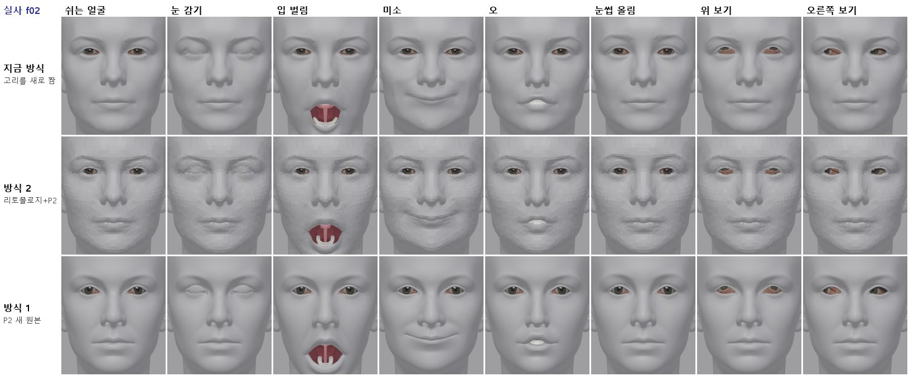
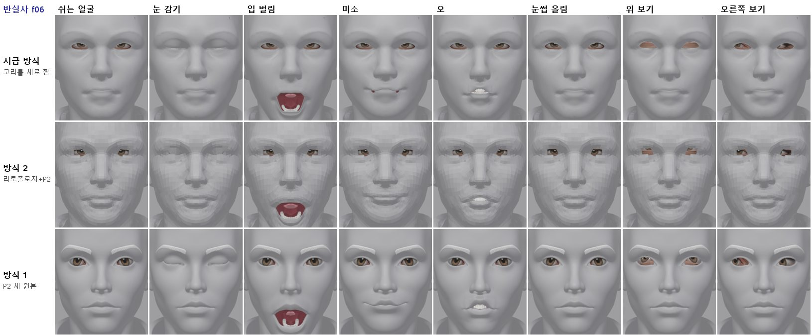
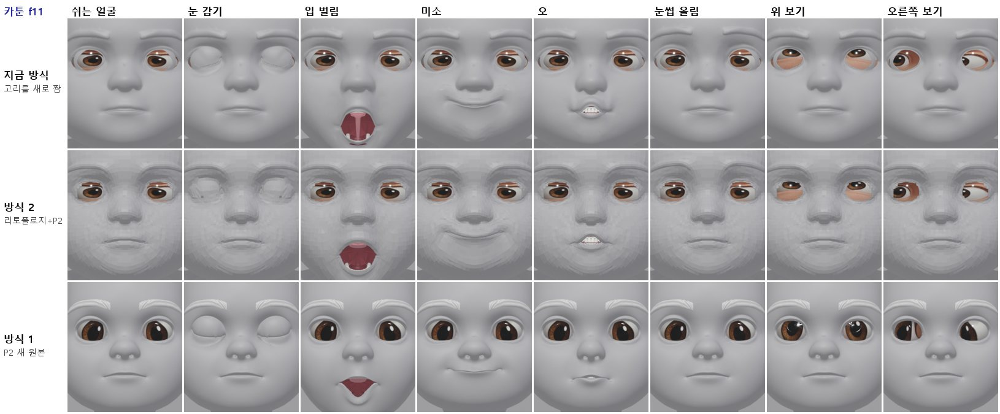
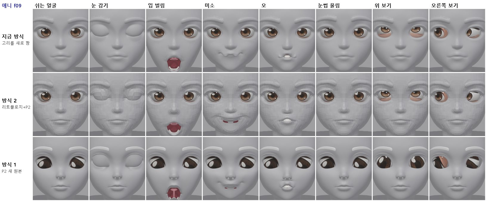
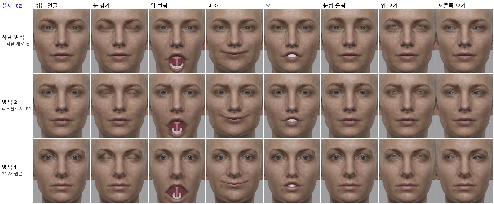
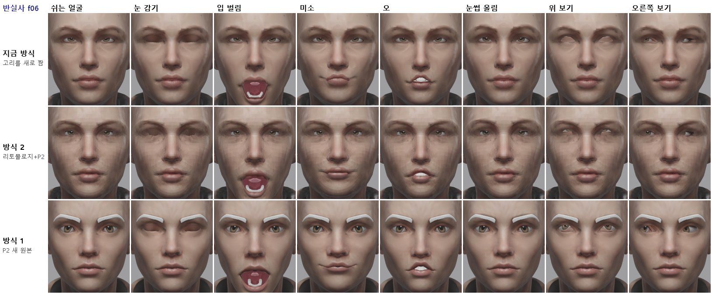
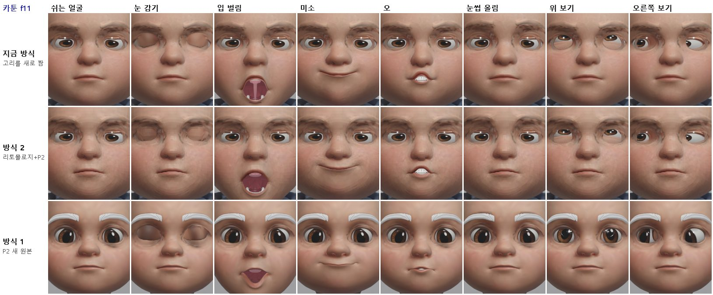
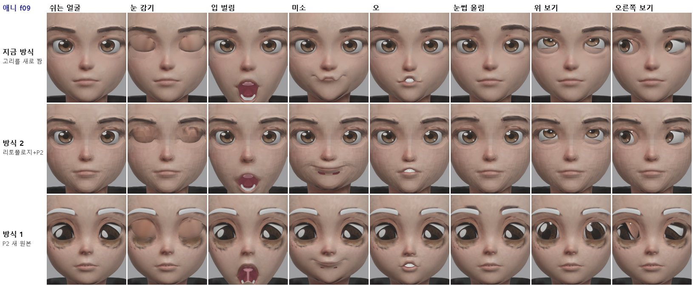
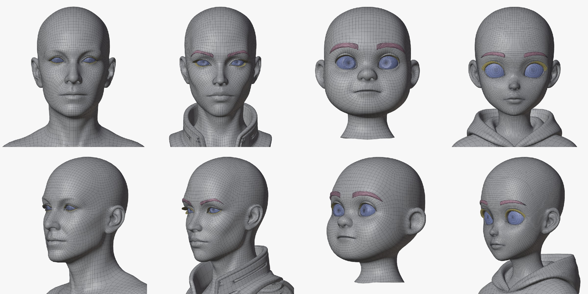
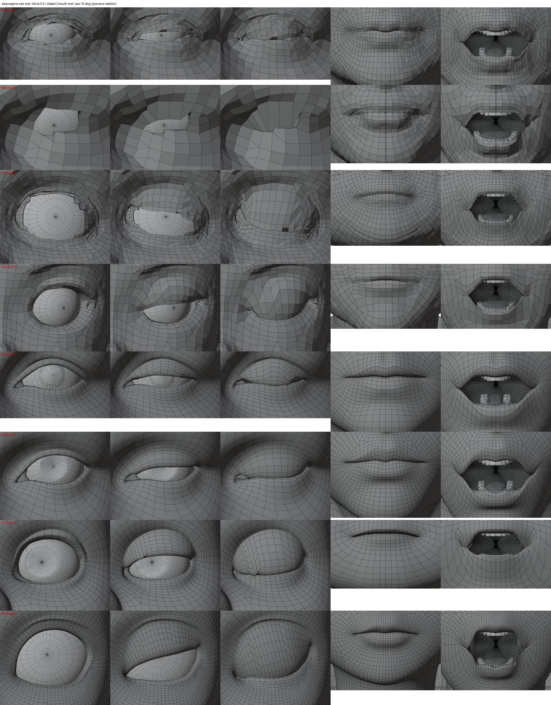

<title>세 방식 최종 비교</title>
<link rel="preconnect" href="https://fonts.googleapis.com">
<link rel="preconnect" href="https://fonts.gstatic.com" crossorigin>
<link rel="stylesheet" href="https://fonts.googleapis.com/css2?family=IBM+Plex+Mono:wght@400;500&family=IBM+Plex+Sans+KR:wght@400;500;600;700&display=swap">
<style>
/* Layout: one reading column; figures full width of the column */
:root{--bg:#F5F6F8;--paper:#fff;--ink:#1B1F27;--muted:#5B6473;--line:#DDE1E8;--soft:#EEF1F6;--accent:#2F5BD3;--good:#1E8A52;--bad:#C83A32;--warn:#B26A00;
--f-body:"IBM Plex Sans KR","Malgun Gothic",system-ui,sans-serif;--f-mono:"IBM Plex Mono",ui-monospace,Consolas,monospace}
@media (prefers-color-scheme: dark){:root:not([data-theme="light"]){--bg:#12151B;--paper:#191D25;--ink:#E5E8EE;--muted:#9BA4B3;--line:#2B313C;--soft:#20252F;--accent:#7FA2FF;--good:#5ACB8C;--bad:#FF6F66;--warn:#F0AE48;color-scheme:dark}}
:root[data-theme="dark"]{--bg:#12151B;--paper:#191D25;--ink:#E5E8EE;--muted:#9BA4B3;--line:#2B313C;--soft:#20252F;--accent:#7FA2FF;--good:#5ACB8C;--bad:#FF6F66;--warn:#F0AE48;color-scheme:dark}
*{box-sizing:border-box}
body{background:var(--bg);color:var(--ink);font-family:var(--f-body);font-size:16px;line-height:1.7}
main{max-width:920px;margin:0 auto;padding-inline:16px;padding-block:26px 60px}
h1{font-size:clamp(25px,4vw,33px);margin:0;line-height:1.25;text-wrap:balance}
.sub{color:var(--muted);margin:6px 0 0}
h2{font-size:21px;margin:38px 0 6px;text-wrap:balance}
h3{font-size:17px;margin:20px 0 4px}
p,ul,ol{max-width:72ch} li{margin:3px 0}
figure{margin:16px 0;background:var(--paper);border:1px solid var(--line);border-radius:12px;padding:12px}
figure img{display:block;width:100%;height:auto;border-radius:6px;background:#2a2a2e}
figure img.narrow{max-width:560px;margin:0 auto}
figure svg{display:block;width:100%;height:auto}
figcaption{font-size:14px;color:var(--muted);margin-top:8px}
figcaption b{color:var(--ink)}
.tbl{overflow-x:auto;margin:12px 0}
table{border-collapse:collapse;font-size:14.5px;min-width:540px;width:100%;background:var(--paper)}
th,td{border:1px solid var(--line);padding:6px 10px;text-align:left;vertical-align:top}
th{background:var(--soft)}
td.num{font-family:var(--f-mono);font-variant-numeric:tabular-nums;white-space:nowrap}
.good{color:var(--good);font-weight:600}.bad{color:var(--bad);font-weight:600}.warn{color:var(--warn);font-weight:600}
.box{background:var(--paper);border:1px solid var(--line);border-left:4px solid var(--accent);border-radius:0 10px 10px 0;padding:12px 16px;margin:14px 0}
code{font-family:var(--f-mono);font-size:13.5px;background:var(--soft);padding:1px 5px;border-radius:4px;overflow-wrap:anywhere}
svg text{font-family:var(--f-body)}
.s-ink{fill:var(--ink)}.s-muted{fill:var(--muted)}.s-paper{fill:var(--paper)}.s-soft{fill:var(--soft)}.s-acc{fill:var(--accent)}.s-good{fill:var(--good)}.s-bad{fill:var(--bad)}
.st-acc{stroke:var(--accent)}.st-good{stroke:var(--good)}.st-ink{stroke:var(--ink)}.st-muted{stroke:var(--muted)}.st-bad{stroke:var(--bad)}
</style>
<style>
.chip{display:inline-block;font-size:12.5px;font-weight:600;padding:1px 8px;border-radius:999px;border:1px solid var(--line);background:var(--soft);white-space:nowrap}
.chip.ok{color:var(--good)}.chip.part{color:var(--warn)}.chip.no{color:var(--bad)}.chip.todo{color:var(--muted)}
.svgwrap{overflow-x:auto}
.svgwrap svg{min-width:640px}
</style>
<main>
<h1>세 방식 최종 비교 (리그·표정·텍스처까지)</h1>
<p class="sub">2026-10-13 · 실사 f02 · 반실사 f06 · 카툰 f11 · 애니 f09 · 같은 체인(chain_v3.sh, tex_v3.sh)으로 세 바탕을 끝까지 돌림</p>

<div class="box"><b>판정: 방식 1 (P2 새 원본 + 고리 따라 자르기)이 가장 좋습니다</b>
<ul>
<li><b>메시가 가장 깨끗합니다.</b> 쉬는 얼굴에 일그러짐·움푹 꺼짐·이음새가 없고, 감은 눈꺼풀이 매끈합니다. 42개 표정에서 뒤집힌 면이 4~58개(지금 방식 17~121개)이고, 감은 눈꺼풀과 안구 사이 여유가 0.41~0.52mm로 가장 큽니다.</li>
<li><b>표정은 지금 방식과 같은 수준이거나 더 깨끗합니다.</b> 입 벌림 입술 틈 31~46mm(지금 방식 33~44mm). 지금 방식에서 생기던 애니 f09 미소의 물결치는 입술이 없습니다.</li>
<li><b>약점</b>(다음 다듬기 대상): ① 눈썹·안구 같은 P2 조각에 색이 입혀지지 않음(눈썹이 흰색) ② 정점 색 텍스처라 정점이 적은 메시(0.8~2.2만 개)에서 흐림 ③ f11 닮음이 보통(볼·턱이 좁음) ④ f09 미소 때 입꼬리에 작은 틈, f11 입 벌림 모양이 조금 세모.</li>
<li><b>방식 2 (리토폴로지 + P2)</b>는 지금 얼굴을 지키지만 약 9천 면이라 면이 각지게 보이고 눈 구멍이 계단처럼 잘립니다. 기본 방식으로는 권하지 않습니다.</li>
<li><b>지금 방식 (고리를 새로 짬)</b>은 텍스처가 가장 선명하지만(정점 10만 개), 고리를 새로 짜면서 생기는 일그러짐·이음새 문제가 남습니다.</li>
</ul></div>

<h2>1. 비교 조건</h2>
<div class="tbl"><table>
<tr><th></th><th>지금 방식 (sym3)</th><th>방식 2 (R)</th><th>방식 1 (P)</th></tr>
<tr><td>바탕</td><td>HD 원본(삼각형 약 19만) 대칭화</td><td>HD 원본을 Tripo 리토폴로지 + 스마트 메시 P2(쿼드 약 9천)</td><td>Tripo 스마트 메시 P2로 새로 생성(쿼드 약 1.3~2.3만) 대칭화</td></tr>
<tr><td>눈·입</td><td>구멍을 내고 고리를 새로 짬 (organ_eye, organ_mouth)</td><td colspan="2">있는 고리(경로)를 따라 자르기만 함 (loop_organs.py): 피부 점은 0.000mm도 안 움직임, 눈꺼풀 안쪽 접힘·안구·입속만 추가</td></tr>
<tr><td>공통 뒤 단계</td><td colspan="3">새 이·잇몸·혀(organ_teeth v2) → 대칭 고정 → 촘촘한 Rigify(변형 뼈 129개, 눈꺼풀·입술 관절을 고리 위에, 턱관절 축) → 입속 무게(아래 턱 100%) → 안구 리그 연결 → 표정 42개 → 눈 감기 + 반쯤 감기 보정 → 눈 굴리기 8개 → 대칭 고정 → 4방향 3K 텍스처 → 눈꺼풀 색</td></tr>
</table></div>

<h2>2. 측정</h2>
<div class="tbl"><table>
<tr><th>항목</th><th>지금 방식</th><th>방식 2</th><th>방식 1</th></tr>
<tr><td>입 벌림 입술 틈 (가운데)</td><td>33~44mm</td><td>32~42mm</td><td>31~46mm</td></tr>
<tr><td>이·혀가 피부 밖으로 나온 점 (3가지 입)</td><td>0</td><td>0~11</td><td>0~1</td></tr>
<tr><td>42개 표정의 뒤집힌 면 합</td><td>17~121</td><td>4~70</td><td>4~58</td></tr>
<tr><td>감은 눈꺼풀 ↔ 안구 최소 거리</td><td>0.21~0.31mm</td><td>0.31~0.32mm</td><td>0.41~0.52mm</td></tr>
<tr><td>무게 없는 점 / 쉬는 얼굴 오차</td><td colspan="3">모두 0 / 0.002mm 이하</td></tr>
<tr><td>피부 정점 수 (텍스처 해상도)</td><td>약 9.9만</td><td>약 0.93~0.98만</td><td>0.77~2.2만 (f11 0.77만, f02 0.86만, f06 1.7만, f09 2.2만)</td></tr>
</table></div>
<p><b>고친 오류</b>(이번 비교 중): 표정 굽기가 템플릿 크기 비율을 머리 전체 높이로 정하는데, 방식 1·2는 목 아래를 잘라 높이가 짧아 비율이 0.85 대신 1.36~1.50이 됐습니다. 그래서 입술 틈이 4~21mm로 약하게 나왔고 이가 비쳤습니다. 같은 좌표의 원래 머리 크기 기준을 쓰도록 바꿔 다시 구웠습니다. 그 밖에 새 Rigify 얼굴용 안구 연결, 카툰 입꼬리(입꼬리가 입술 가운데보다 낮음)에서 입술 관절 고르기, 큰 머리의 텍스처 눈 구멍 찾기, P 바탕의 얼굴 렌더 숨김을 고쳤습니다.</p>

<h2>3. 그림</h2>
<figure><figcaption><b>그림 1.</b> 실사 f02 회색(메시만). 위부터 지금 방식, 방식 2, 방식 1. 방식 2는 면이 각지고, 방식 1은 쉬는 얼굴·눈 감기·입 벌림·오가 가장 매끈합니다.</figcaption></figure>
<figure><figcaption><b>그림 2.</b> 반실사 f06 회색.</figcaption></figure>
<figure><figcaption><b>그림 3.</b> 카툰 f11 회색. 방식 1의 입 벌림이 조금 세모입니다(다듬기 대상).</figcaption></figure>
<figure><figcaption><b>그림 4.</b> 애니 f09 회색. 지금 방식의 미소는 입술이 물결치고, 방식 1은 매끈하지만 입꼬리에 작은 틈이 보입니다.</figcaption></figure>
<figure><figcaption><b>그림 5.</b> 실사 f02 텍스처. 정점 색 방식이라 정점이 많은 지금 방식이 가장 선명합니다.</figcaption></figure>
<figure><figcaption><b>그림 6.</b> 반실사 f06 텍스처. 방식 1의 눈썹은 P2 조각이라 색이 입혀지지 않아 흰색입니다.</figcaption></figure>
<figure><figcaption><b>그림 7.</b> 카툰 f11 텍스처.</figcaption></figure>
<figure><figcaption><b>그림 8.</b> 애니 f09 텍스처. 방식 1의 안구는 P2 안구 조각에 정면 그림이 투영되어 홍채 모양이 어색합니다.</figcaption></figure>
<figure><figcaption><b>그림 9.</b> 방식 1 바탕(P2 새 원본, 대칭화). 안구(파랑)·눈썹(분홍)·눈꺼풀(노랑)이 따로 있습니다. f02·f06·f11은 눈 구멍이 뚫려 있지 않고 피부가 안구 뒤로 말려 들어가 있어서, 그 가장자리 경로를 따라 잘랐습니다. 실제 구멍이 있는 것은 f09뿐입니다.</figcaption></figure>
<figure><figcaption><b>그림 10.</b> 고리 따라 자르기 미리보기(와이어). 위 4줄 방식 2, 아래 4줄 방식 1. 눈은 뜬 눈·반쯤·감은 눈, 입은 다문 입·턱 15°(간이 회전).</figcaption></figure>

<h2>4. 방식 1을 다듬을 순서 (제안)</h2>
<ol>
<li><b>텍스처를 이미지로</b>: 정점 색 대신 UV를 펴고 4방향 그림을 2K 이미지로 구워 넣기(면이 적어도 선명). P2 눈썹·눈꺼풀 조각에도 색 입히기(또는 Tripo 텍스처 생성 결과를 쓰기).</li>
<li><b>안구</b>: P2 안구 조각 대신 우리 안구(홍채 그림 따로) 또는 P2 텍스처 안구를 쓰고, 정면 투영으로 눈꺼풀 색이 묻는 문제를 없애기.</li>
<li><b>입</b>: 미소 때 입꼬리 틈(f09), 입 벌림 모양(f11) 다듬기 — 입꼬리 고리와 입술 관절 배치.</li>
<li><b>눈 감기 모서리</b>: 완전히 감을 때 눈 모서리에서 뒤집히는 작은 삼각형 정리.</li>
<li><b>닮음</b>: f11은 볼·턱이 좁게 나와 다시 생성할지 결정(머리당 100크레딧).</li>
</ol>

<h2>5. 파일</h2>
<ul>
<li>체인: 임시 폴더 <code>m1/chain_v3.sh</code>, <code>m1/tex_v3.sh</code> (sym3 | R | P). 결과 <code>m1/v3/&lt;방식&gt;/&lt;머리&gt;/</code>.</li>
<li>새 도구: <code>tools/face_auto/loop_organs.py</code>, <code>loop_lib.py</code>, <code>p2_base.py</code>, <code>topo_eval.py</code>, <code>organ_eye_bind.py</code>, <code>organ_eye_look_keys.py</code>, <code>rig_viz_wire.py</code>.</li>
</ul>
</main>
